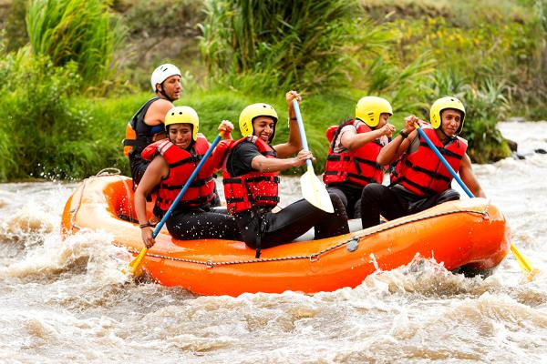
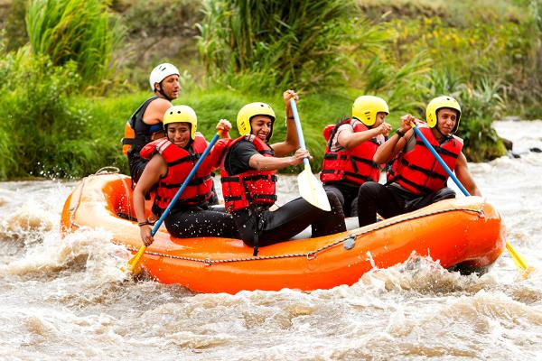

Whitewater Rafting Ghana, we create unforgettable adventures that connect our guests with nature's wild beauty, while prioritizing safety, fun, and exceptional service. We aim to offer a unique and thrilling whitewater rafting experience that fosters a sense of community and shared joy, ensuring every guest leaves with lasting memories and a heart full of gratitude. Our commitment to your satisfaction drives us to continuously improve, making every moment of your journey as exhilarating and enjoyable as the rapids themselves
Our purpose is to inspire a sense of adventure, camaraderie, and respect for nature in every person who joins us on the water. Through every paddle stroke, we aim to deliver not just a rafting trip, but a connection to nature, each other, and the pure joy of experiencing the great outdoors. We exist to provide more than a service; we offer an experience that refreshes the spirit and creates a lifetime of memories.
We believe that adventure is for everyone, that every guest deserves to feel valued, heard, and cared for, and that the true spirit of whitewater rafting lies in the shared joy of discovery. We believe in the power of nature to heal, refresh, and unite. Our creed is to offer every raft trip with the utmost dedication to your safety, comfort, and happiness—making each river journey a chapter in your personal adventure story. Together, we navigate life's rapids, knowing that the ride is always better with the right company.
 
